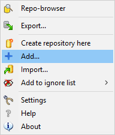
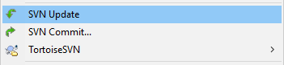
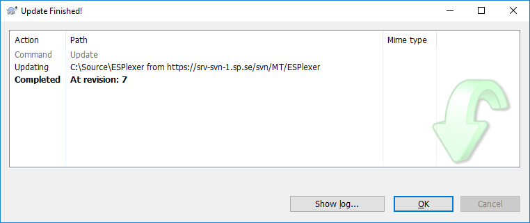

Vad är SVN?
SVN, eller Subversion som det egentligen heter, är ett verktyg för att versionshantera källkod. Det har stöd för:
- Samtidig redigering av filer Det betyder att, om filformatet stödjer det (dvs är textbaserat), flera användare kan göra ändringar i samma fil samtidigt. För andra filer (t ex LabView-filer) kan man låsa filer så att de bara kan redigeras av en användare.
- Central backup Hela källkodsträdet, med incheckade filer, historik och allt, backas upp varje natt.
- Spårbara ändringar Med hjälp av kommandot "Blame" kan varje rad i en fil annoteras med vem som senast ändrade den.
- Konsekvent hantering av versioner Med hjälp av branches kan källkoden för att bygga varje version avgränsas för framtida bruk som t ex: buggfixning, granskningar eller nyfikenhet
Generellt kan man säga att systemet arbetar med ett "repository" där alla versioner av alla filer ligger sparade, och (minst) en arbetskatalog på varje dator som ansluter till systemet. Din arbetskatalog skiljer sig inte så mycket från en vanlig katalog förutom
att du har möjlighet att utföra versionshanteringsoperationer på filer och kataloger där. För olika verktyg och program är en versionshanterad fil oskiljbar från en vanlig fil.
Detta avsnitt går igenom följande moment
- Lägga till
- Uppdatera
- Hantera konflikter
- Checka in
Tillsammans borde detta täcka in det mesta i vårt arbestflöde.
Lägga till
Att lägga till filer i vårt repo består av 4 steg.
1. Var
Titta under avsnittet "Struktur" för att komma fram till var koden ska ligga. I denna guide kommer jag utgå ifrån att det är ett projet. Skapa då en katalog på rätt ställe i din arbetskatalog och kopiera dit alla filer. |
2. Add
Att lägga till en fil eller katalog är så enkelt som att högerklicka på den, välja TortoiseSVN och sedan Add. (se bild till höger) |
 |
3. Vad
Alla filer ska inte checkas in, vissa ställer till och med till med bekymmer om de versionshanteras. Generellt gäller följande: binärer (.exe, .dll, .lib osv) som byggts från incheckad källkod skall inte checkas in.
Inte heller lokala inställningsfiler för utvecklingsmiljöer eller liknande.
I exemplet nedan skall till exempel inte katalogen "Flow/.vs/" checkas in. Därför har jag kryssat ur dess kryssruta (alla filer och kataloger under "Flow/.vs/" kryssas då ur automatiskt.
|
 |
När du är nöjd med vilka filer som ska vara med, tryck på OK. Om allt går bra ska filen nu få ett blått + i hörnet.
4 Commit
Här finns sak att lägga på minnet: bara för att man har gjort "Add" är inte filerna skickade till repot, vi måste komma ihåg att även göra "Commit", det är först då filerna faktiskt skickas.
|
Uppdatera
Förutom att spara undan alla mästerverk du själv presterat och bevara dem för eftervärlden är ju en stor poäng med versionshanteringen att kunna samarbeta och då kunna få tag på ändringar som andra har gjort i filerna. Dessutom är systemet så
konstruerat att du inte kan checka in något som inte är av senaste version.
Därför är det bra att ibland då och då, eller när du vet att det behövs, kör kommandot "SVN Update"

När du klickat på "SVN Update" kommer följande fönster att visas:

Några saker att notera:
- Alla filer och kataloger som hanteras visas i fönstret
- Texten Completed At revision: X säger att allt gått bra. Revisionsnumret är strikt ökande, gäller över hela repot och refererar till hur alla filer såg ut vid det specifika tillfället som de ändrade filerna checkades in.
- Om man trycker på "Show log..." får man se vilka commits som påverkat filerna. Men det är ett (framtida) kapitel för sig.
Hantera konflikter
Ibland blir det konflikter, när samma fil ändrats på ett sätt så att det inte går att automatiskt foga samman ändringarna (oftast har någon annan ändrat en rad som du också ändrat). Det finns ett medföljande verktyg som heter TortoiseMerge. Det ska beskrivas här:
Men det avsnittet är inte skrivet ännu. Men det står lite om Commit på nästa sida...
Checka in
Att checka in är att skicka sina ändringar till servern. Checka in ofta, men försök se till att varje commit kan köras/kompileras (det är så irriterande när man gjort något bra, gör en update inför att man ska checka in, och plötsligt får man nya kompileringsfel...)
Praktiskt fungerar det som en update: Högerklicka på en fil/katalog som ska checkas in, välj "Check in".
Då öppnas ett nytt fönster, det är beskrivet i en egen sektion i menyn till vänster.
{kind=link}